O trabalho consiste em fazer a interface gráfica para um caixa de
banco bem simples. O arquivo abaixo, banco.py,
contém a classe das contas bancárias e uma pequena base
consistindo de três contas e alguns lançamentos, e deve ser importado
dentro do programa principal do trabalho com:
from banco import *
O arquivo banco.py:
from datetime import date
def hoje():
return str(date.today())
class Conta:
def __init__(self, numero, nome, saldo = 0):
self.numero = numero
self.correntista = nome
self.saldo = saldo
self.lancamentos = []
def alterarNome(self, nome):
self.correntista = nome
def deposito(self, valor, msg = "deposito"):
self.lancamentos.append((hoje(), msg, valor))
self.saldo = self.saldo + valor
def saque(self, valor, msg = "saque"):
self.lancamentos.append((hoje(), msg, -valor))
self.saldo = self.saldo - valor
def transferencia(self, outra, valor):
self.saque(valor, "transferencia para %s" % outra.numero)
outra.deposito(valor, "transferencia de %s" % self.numero)
def extrato(self, data):
linhas = []
saldo = self.saldo
i = len(self.lancamentos) - 1
while i >= 0 and self.lancamentos[i][0] >= data:
saldo = saldo - self.lancamentos[i][2]
i = i - 1
i = i + 1
while i < len(self.lancamentos):
datalanc, desc, val = self.lancamentos[i]
saldo = saldo + val
linhas.append("%s %-34s%10.2f%10.2f" % (datalanc, desc, val, saldo))
i = i + 1
return linhas
contas = {}
contas["123"] = Conta("123", "Fulano", 40)
contas["456"] = Conta("456", "Beltrano", 100)
contas["768"] = Conta("768", "Cicrano", 70)
contas["123"].lancamentos = [("2011-04-20", "abertura", 100),\
("2011-05-10", "saque", -30),\
("2011-05-15", "deposito", 20),\
("2011-05-29", "transferencia para 456", -50)]
contas["456"].lancamentos = [("2011-04-12", "abertura", 50),\
("2011-05-29", "transferencia de 123", 50)]
contas["768"].lancamentos = [("2011-05-01", "abertura", 70)]
Quando executado, o programa principal do trabalho deverá mostrar a tela a seguir:
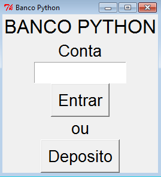
O usuário tem duas opções: pode clicar em "Depósito" para ir para a tela de depósito, ou entrar um número de conta e clicar em "Entrar" para ir para a tela de movimentação.
A tela de depósito é a seguinte:
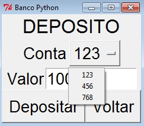A caixa de opções mostra os números de todas as contas do sistema. O valor é quanto o usuário quer depositar na conta selecionada (está preenchido nessa imagem, mas deve aparecer vazio quando a tela é mostrada).
O botão de "Voltar" volta para a tela inicial do sistema. O botão de depósito efetua o depósito, mostrando a seguinte tela de aviso:
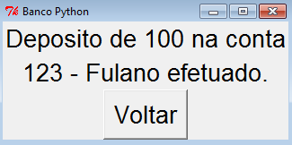O botão "Voltar" da tela de aviso volta para a tela inicial do sistema.
Se o usuário entra um número de conta válido o sistema mostra a seguinte tela de movimentação:
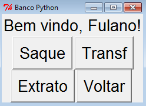Caso a conta não exista a seguinte tela é mostrada, com o botão "Voltar" retornando à tela inicial:
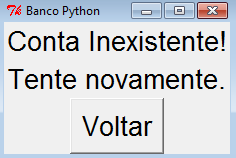O botão "Voltar" da tela de movimentação volta para a tela inicial. Os botões "Saque", "Transf" e "Extrato" vão para as respectivas telas.
A tela de saque tem a seguinte forma (o valor está preenchido na imagem, mas no programa é vazio quando a tela é mostrada):
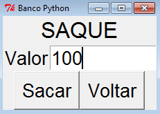O usuário deve entrar o valor do saque e clicar em "Sacar" se quiser efetuar o saque, ou "Voltar" para voltar à tela de movimentação. Se o usuário clicar em "Sacar" e a conta tenha saldo suficiente para o saque o sistema efetua o saque e mostra a seguinte tela de aviso (o botão "Voltar" da tela de aviso vai para a tela de movimentação):
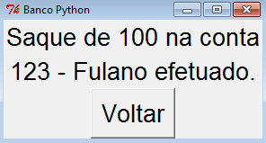Caso a conta não tenha saldo suficiente para o saque o mesmo não é feito e o sistema mostra a seguinte tela de aviso (o botão "Voltar" da tela de aviso vai para a tela de movimentação):
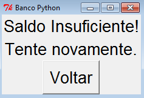A tela de transferência é muita parecida com a de depósito, e funciona de um modo parecido:
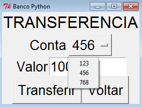O botão "Voltar" volta para a tela de movimentação. O botão transferir confere se a conta tem saldo suficiente para a transferência, e caso tenha efetua a transferência para a conta selecionada e mostra a seguinte tela de aviso (o botão "Voltar" da tela de aviso vai para a tela de movimentação):
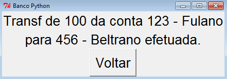Caso a conta não tenha saldo suficiente para a transferência a mesma não é feita e o sistema mostra a seguinte tela de aviso (o botão "Voltar" da tela de aviso vai para a tela de movimentação):
A tela de extrato tem um campo para o usuário entrar a data de início do extrato, e botões para pedir mostrar o extrato e para voltar para a tela de movimentação (na imagem o campo de data aparece preenchido, mas ele deve aparecer vazio quando a tela é mostrada):
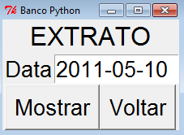Quando o usuário clica no botão "Mostrar" a tela de extrato é mostrada, com as linhas de extrato a partir da data:
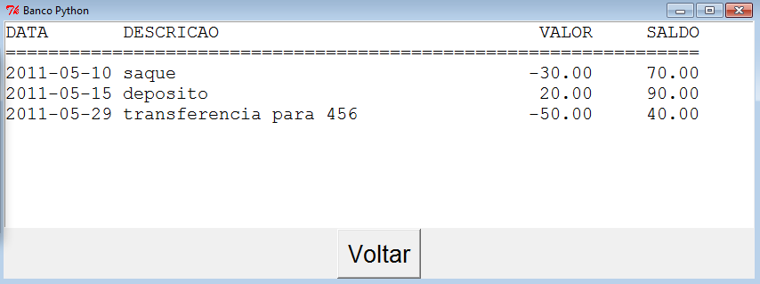O botão "Voltar" dessa tela volta para a tela de movimentação.